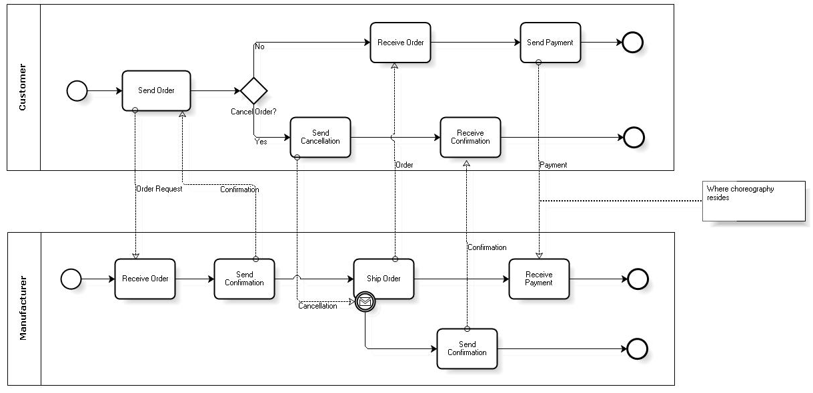
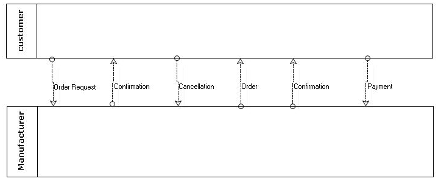

In BPMN you have three main categories of processes:
Orchestration It is the main category of BPMN and corresponds to the processes you model in GeneXus. They represent a specific vision of a business process. All the elements that make up an orchestration share the same context; that is to say, all the information related to the process is available for all the elements that integrate it. It should be pointed out that one diagram can contain several choreographies. In this case, each one of them is represented in its container called Pool. Therefore, you can have several processes in the same diagram, each one in its pool. If you only have one Pool, it can be assumed that the diagram is the Pool and it doesn’t have to be explicitly drawn. In turn, each Pool can be subdivided into Lanes that represent the process roles (read the section Swimlanes for a detailed description of Pools and Lanes). Choreography They describe the expected behavior between participants (between Pools), but here you speak of participants that are not necessarily included in the same business domain. For example, participants can be Client and Manufacturers. For each one of them, there is a specific orchestration (a specific process within its corresponding Pool). The choreography would be the specification of possible interactions between these participants, which are performed through the exchange of messages. Another characteristic of choreographies is that there isn’t a central context shared by all participants. Up to BPMN 1.1 choreographies are represented in the same diagrams as orchestrations. However, the elements that allow for a complete definition of choreography are still to be defined. It is expected that BPMN 2.0 will provide this definition and even add a specific type of diagram. The figure below shows an example of choreography according to BPMN 1.1:  So far, this category is rather confusing because participants can be easily confused with roles, when in fact a participant is more of a process. What’s more, a practical use case that clearly shows the execution of choreography in a BPM suite hasn't been found, and it seems to be used mainly for documentation purposes. The article www.brsilver.com/wordpress/2008/06/11/bpmn-to-requester-get-outta-my-pool/ suggests having a single Pool with orchestration (the process that you’re interested in modeling because it’s the one within our organization) while the other pools are drawn empty (they are external black boxes where you send and receive messages). Collaboration Participants (Pools) are displayed as well as the messages between these participants as shown in the image below:  They can contain one or more orchestrations and choreographies. Go to the main article - Return to the previous section - Go to the next section
|
| Backlinks | ||
| Toc:GeneXus BPM Suite | Introduction to BPMN | |
| Introduction to BPMN - Activities | Introduction to BPMN - Overview | Introduction to business process modeling based on the BPMN standard |